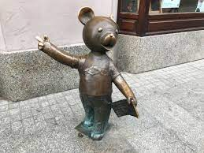

<!DOCTYPE html>
<html>
<head>
    
    <meta http-equiv="content-type" content="text/html; charset=UTF-8" />
    
        <script>
            L_NO_TOUCH = false;
            L_DISABLE_3D = false;
        </script>
    
    <style>html, body {width: 100%;height: 100%;margin: 0;padding: 0;}</style>
    <style>#map {position:absolute;top:0;bottom:0;right:0;left:0;}</style>
    <script src="https://cdn.jsdelivr.net/npm/leaflet@1.9.3/dist/leaflet.js"></script>
    <script src="https://code.jquery.com/jquery-1.12.4.min.js"></script>
    <script src="https://cdn.jsdelivr.net/npm/bootstrap@5.2.2/dist/js/bootstrap.bundle.min.js"></script>
    <script src="https://cdnjs.cloudflare.com/ajax/libs/Leaflet.awesome-markers/2.0.2/leaflet.awesome-markers.js"></script>
    <link rel="stylesheet" href="https://cdn.jsdelivr.net/npm/leaflet@1.9.3/dist/leaflet.css"/>
    <link rel="stylesheet" href="https://cdn.jsdelivr.net/npm/bootstrap@5.2.2/dist/css/bootstrap.min.css"/>
    <link rel="stylesheet" href="https://netdna.bootstrapcdn.com/bootstrap/3.0.0/css/bootstrap.min.css"/>
    <link rel="stylesheet" href="https://cdn.jsdelivr.net/npm/@fortawesome/fontawesome-free@6.2.0/css/all.min.css"/>
    <link rel="stylesheet" href="https://cdnjs.cloudflare.com/ajax/libs/Leaflet.awesome-markers/2.0.2/leaflet.awesome-markers.css"/>
    <link rel="stylesheet" href="https://cdn.jsdelivr.net/gh/python-visualization/folium/folium/templates/leaflet.awesome.rotate.min.css"/>
    
            <meta name="viewport" content="width=device-width,
                initial-scale=1.0, maximum-scale=1.0, user-scalable=no" />
            <style>
                #map_b8f8e9331ec2fc0e0a8fc0b3fcffa725 {
                    position: relative;
                    width: 100.0%;
                    height: 100.0%;
                    left: 0.0%;
                    top: 0.0%;
                }
                .leaflet-container { font-size: 1rem; }
            </style>
        
</head>
<body>
    
    
            <div class="folium-map" id="map_b8f8e9331ec2fc0e0a8fc0b3fcffa725" ></div>
        
</body>
<script>
    
    
            var map_b8f8e9331ec2fc0e0a8fc0b3fcffa725 = L.map(
                "map_b8f8e9331ec2fc0e0a8fc0b3fcffa725",
                {
                    center: [51.760687810375956, 19.458312506837643],
                    crs: L.CRS.EPSG3857,
                    zoom: 12,
                    zoomControl: true,
                    preferCanvas: false,
                }
            );

            

        
    
            var tile_layer_1c7c74665300f5681abd5d90c3bda53f = L.tileLayer(
                "https://{s}.tile.openstreetmap.org/{z}/{x}/{y}.png",
                {"attribution": "Data by \u0026copy; \u003ca target=\"_blank\" href=\"http://openstreetmap.org\"\u003eOpenStreetMap\u003c/a\u003e, under \u003ca target=\"_blank\" href=\"http://www.openstreetmap.org/copyright\"\u003eODbL\u003c/a\u003e.", "detectRetina": false, "maxNativeZoom": 18, "maxZoom": 18, "minZoom": 0, "noWrap": false, "opacity": 1, "subdomains": "abc", "tms": false}
            ).addTo(map_b8f8e9331ec2fc0e0a8fc0b3fcffa725);
        
    
            var marker_115669467d212cb155a130d45ec8152e = L.marker(
                [51.76469177181548, 19.45746972538261],
                {}
            ).addTo(map_b8f8e9331ec2fc0e0a8fc0b3fcffa725);
        
    
            var icon_0ecb4ede864dedf5c886ee3c28b094b7 = L.AwesomeMarkers.icon(
                {"extraClasses": "fa-rotate-0", "icon": "heart", "iconColor": "pink", "markerColor": "blue", "prefix": "glyphicon"}
            );
            marker_115669467d212cb155a130d45ec8152e.setIcon(icon_0ecb4ede864dedf5c886ee3c28b094b7);
        
    
        var popup_a6b7ab65a1988b19e1978a941556fd80 = L.popup({"maxWidth": "100%"});

        
            
                var html_6b68435063138d24f53118aeea0d6dd4 = $(`<div id="html_6b68435063138d24f53118aeea0d6dd4" style="width: 100.0%; height: 100.0%;"><h1>Laweczka Tuwima</h1><p></p></div>`)[0];
                popup_a6b7ab65a1988b19e1978a941556fd80.setContent(html_6b68435063138d24f53118aeea0d6dd4);
            
        

        marker_115669467d212cb155a130d45ec8152e.bindPopup(popup_a6b7ab65a1988b19e1978a941556fd80)
        ;

        
    
    
            marker_115669467d212cb155a130d45ec8152e.bindTooltip(
                `<div>
                     Laweczka Tuwima
                 </div>`,
                {"sticky": true}
            );
        
    
            var marker_f2b98e5c39757bbda4e4e9646f910e7c = L.marker(
                [51.766564986894885, 19.456798138876003],
                {}
            ).addTo(map_b8f8e9331ec2fc0e0a8fc0b3fcffa725);
        
    
            var icon_b9bddd6567a2a54ef7fa726dc5873f12 = L.AwesomeMarkers.icon(
                {"extraClasses": "fa-rotate-0", "icon": "heart", "iconColor": "pink", "markerColor": "blue", "prefix": "glyphicon"}
            );
            marker_f2b98e5c39757bbda4e4e9646f910e7c.setIcon(icon_b9bddd6567a2a54ef7fa726dc5873f12);
        
    
        var popup_806f67d5e222cc479f698a9eb2ee184c = L.popup({"maxWidth": "100%"});

        
            
                var html_fc0e04447b7f0ee2b748ad530341fd42 = $(`<div id="html_fc0e04447b7f0ee2b748ad530341fd42" style="width: 100.0%; height: 100.0%;"><h1>Mis Uszatek</h1><p> <Teddy Bear Uszatek in Lodz is a small sculpture of this famous fairy tale character, reaching about a meter, standing on the main promenade - Piotrkowska Street.></p></div>`)[0];
                popup_806f67d5e222cc479f698a9eb2ee184c.setContent(html_fc0e04447b7f0ee2b748ad530341fd42);
            
        

        marker_f2b98e5c39757bbda4e4e9646f910e7c.bindPopup(popup_806f67d5e222cc479f698a9eb2ee184c)
        ;

        
    
    
            marker_f2b98e5c39757bbda4e4e9646f910e7c.bindTooltip(
                `<div>
                     Mis Uszatek
                 </div>`,
                {"sticky": true}
            );
        
    
            var marker_88a84b0c82de5aae49fd6b3bfb07cf37 = L.marker(
                [51.77721719686519, 19.45463642538355],
                {}
            ).addTo(map_b8f8e9331ec2fc0e0a8fc0b3fcffa725);
        
    
            var icon_e86b95458f4f58a570b239e2a6d8ca18 = L.AwesomeMarkers.icon(
                {"extraClasses": "fa-rotate-0", "icon": "heart", "iconColor": "pink", "markerColor": "blue", "prefix": "glyphicon"}
            );
            marker_88a84b0c82de5aae49fd6b3bfb07cf37.setIcon(icon_e86b95458f4f58a570b239e2a6d8ca18);
        
    
        var popup_ee783d4f204e3a0249d38e578db8938a = L.popup({"maxWidth": "100%"});

        
            
                var html_5bf7634a4f7a724c967bed5eaf9b065f = $(`<div id="html_5bf7634a4f7a724c967bed5eaf9b065f" style="width: 100.0%; height: 100.0%;"><h1>Freedom Square</h1></div>`)[0];
                popup_ee783d4f204e3a0249d38e578db8938a.setContent(html_5bf7634a4f7a724c967bed5eaf9b065f);
            
        

        marker_88a84b0c82de5aae49fd6b3bfb07cf37.bindPopup(popup_ee783d4f204e3a0249d38e578db8938a)
        ;

        
    
    
            marker_88a84b0c82de5aae49fd6b3bfb07cf37.bindTooltip(
                `<div>
                     Laweczka Tuwima
                 </div>`,
                {"sticky": true}
            );
        
    
            var marker_7456521362ce477e33f3c7e9001069d3 = L.marker(
                [51.76792979001689, 19.456680333446094],
                {}
            ).addTo(map_b8f8e9331ec2fc0e0a8fc0b3fcffa725);
        
    
            var icon_8df656aba3dccac8fc4ef2fdadbd1572 = L.AwesomeMarkers.icon(
                {"extraClasses": "fa-rotate-0", "icon": "heart", "iconColor": "pink", "markerColor": "blue", "prefix": "glyphicon"}
            );
            marker_7456521362ce477e33f3c7e9001069d3.setIcon(icon_8df656aba3dccac8fc4ef2fdadbd1572);
        
    
        var popup_4faf183490d8786711d9da40797334c3 = L.popup({"maxWidth": "100%"});

        
            
                var html_c3fa96bc9f16ea3f83f1d1e130744ae5 = $(`<div id="html_c3fa96bc9f16ea3f83f1d1e130744ae5" style="width: 100.0%; height: 100.0%;"><h1>Rubenstein Piano</h1></div>`)[0];
                popup_4faf183490d8786711d9da40797334c3.setContent(html_c3fa96bc9f16ea3f83f1d1e130744ae5);
            
        

        marker_7456521362ce477e33f3c7e9001069d3.bindPopup(popup_4faf183490d8786711d9da40797334c3)
        ;

        
    
    
            marker_7456521362ce477e33f3c7e9001069d3.bindTooltip(
                `<div>
                     Rubenstein Piano
                 </div>`,
                {"sticky": true}
            );
        
</script>
</html>